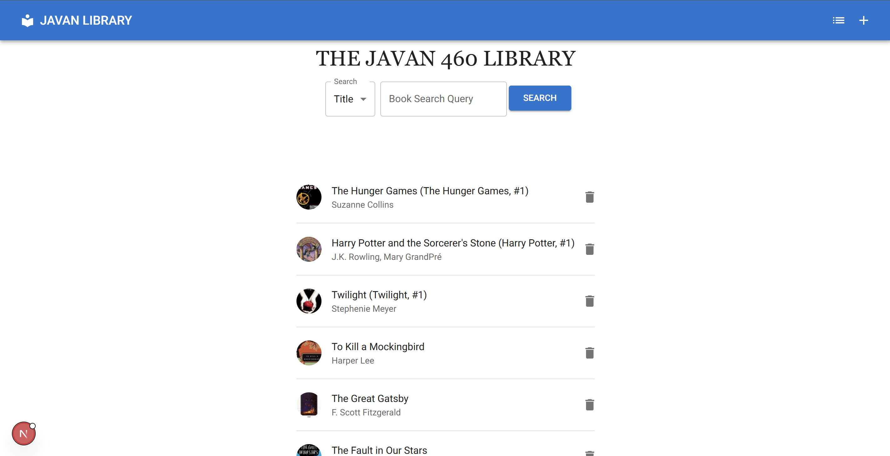
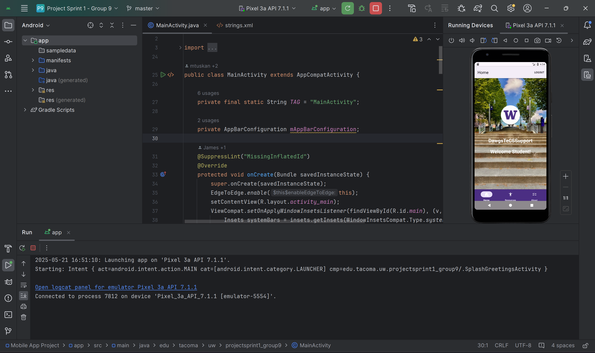
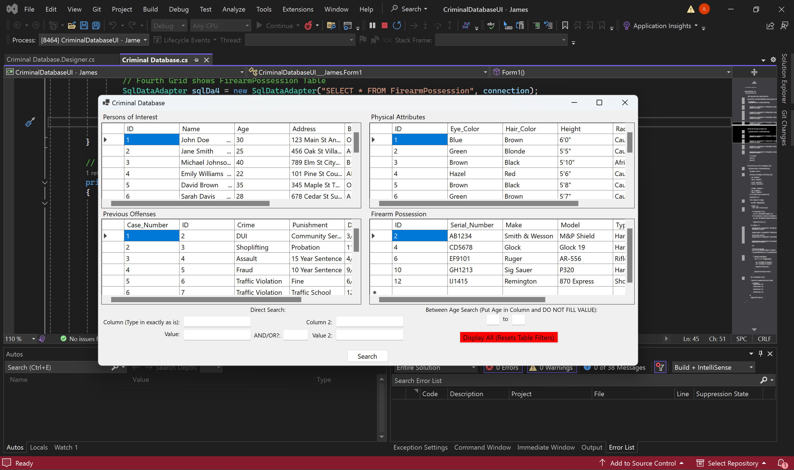
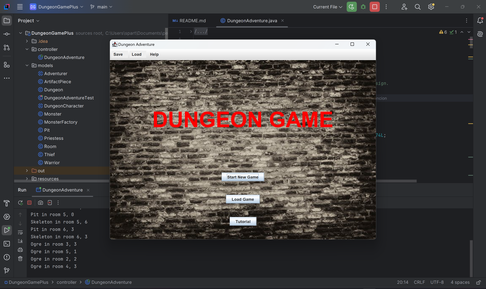
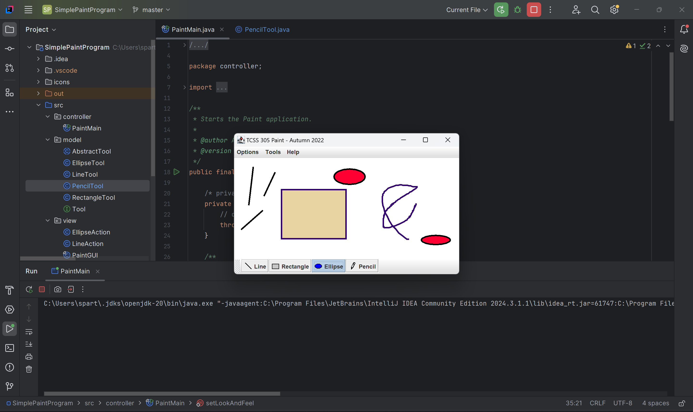

Projects
Here is a detailed list of all the projects that I have done. Below you will find information such a brief description of the project, skills used, and team size. Some images and links will be provided as well.
Book Database
Description: A database that stores information about books. It basic functionality using SQL queries provided,
which include deleting, displaying, adding, and updating a book. This was a special project coded in two separate
groups where we created a back end for the first sprint, and then required to create a front end for another group for
the second sprint. The front end is built using Typescript, React, and JavaScript used with Next.js to connect to a server
and generate the web application and display. The back end is built using PHP.
Skills: TypeScript, JavaScript, React, Node.js, Next.js, Database Query, PostgreSQL, Git/Github, VS Code, HTML, CSS,
Docker, API Documentation
Team Size: Full Stack Developer in 4 Person Team, paired with another group.
Links (Different back end for front end):
- Front end: https://github.com/jameslau3/TCSS460-WebAPIFrontEnd
- Back end: https://github.com/jameslau3/TCSS460-WebAPI
DawgsTeCSSupport (Android App)
Description: An app created to provide information and support to upcoming UWT Computer Science students. App designed in Android Studio
, that includes these features: user authentication, user feedback system using a database, text and picture display, hyperlink/button
interactions, etc.
Skills: Java, Kotlin, XML, Android Studio, IntelliJ
Team Size: Full Stack Developer in Team of 3
Links: https://github.com/mtuskan/android_app_project_sprint_1
Criminal Database Viewer
Description: Simple Database created with SQL Queries in a .sql file. Paired with a Windows Form App frontend coded
in C#. Can perform queries depending on textbox entries.
Skills: C#, Structured Query Language (SQL), Visual Studio, SQL Management Studio
Team Size: Full stack developer of pairs.
Links: https://github.com/jameslau3/CriminalDatabase
Dungeon Game (Java Swing)
Description: A game with backend coded in Java that uses JavaSwing GUI to display the game. The game requires users to explore a randomly generated dungeon
environment that includes monsters that battle the player and hazards that can hurt the player’s character. The game features different pages, buttons, advanced algorithms,
and allows saving. However, do to unfair team dynamics from one member, the game is not fully completed.
Skills: Java, JavaSwing, Model View Controller Design Pattern, Factory Pattern, SQLite and Database, Git/Github, JUnit Testing, Test Driven Development
Team Size:Full Stack Developer in 3 Person Team
Links: https://github.com/m-inven/DungeonGamePlus
Simple Paint Program
Description: Simple paint program using JavaSwing GUI, consisting of tools such as drawing lines and shapes. Has multiple features like
saving, erasing, clearing canvas and filling shapes with color.
Skills: Java, JavaSwing, Model View Controller Design Pattern
Team Size: Individual (Front End and Back End only)
Links: https://github.com/jameslau3/SimplePaintProgram
Extra:
HTML/CSS Practice
Description: Some HTML/CSS practice done in a learning course.